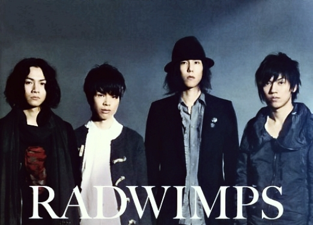

Over Mij
¿Hola amigo como estas? Ik ben Sam de Heus, en dit is wat interessante informatie over mij.
Favoriete Band:

Favoriete Games:

Ik ben niet zo'n hele actieve gamer meer (ik ben vooral serie verslaafd op het moment). Maar ik heb uiteraard wel een aantal favoriete games. Op nummer 1 staat voor mij op dit moment de game 'Valorant' wat in mijn ogen de beste competitive shooter van het moment is. Verder ben ik een fan van Horizon Zero Dawn en de Stronghold series. Maar volgensmij mag ik deze lijst wettelijk gezien niet maken zonder Minecraft te noemen.